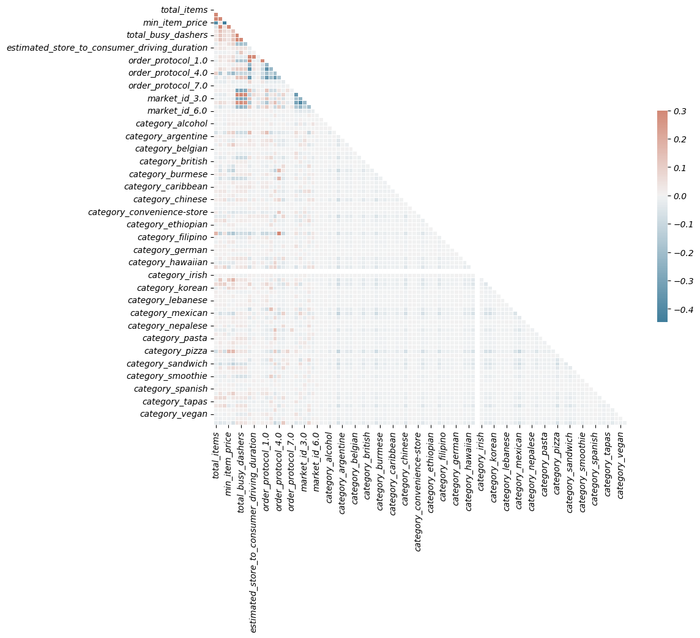
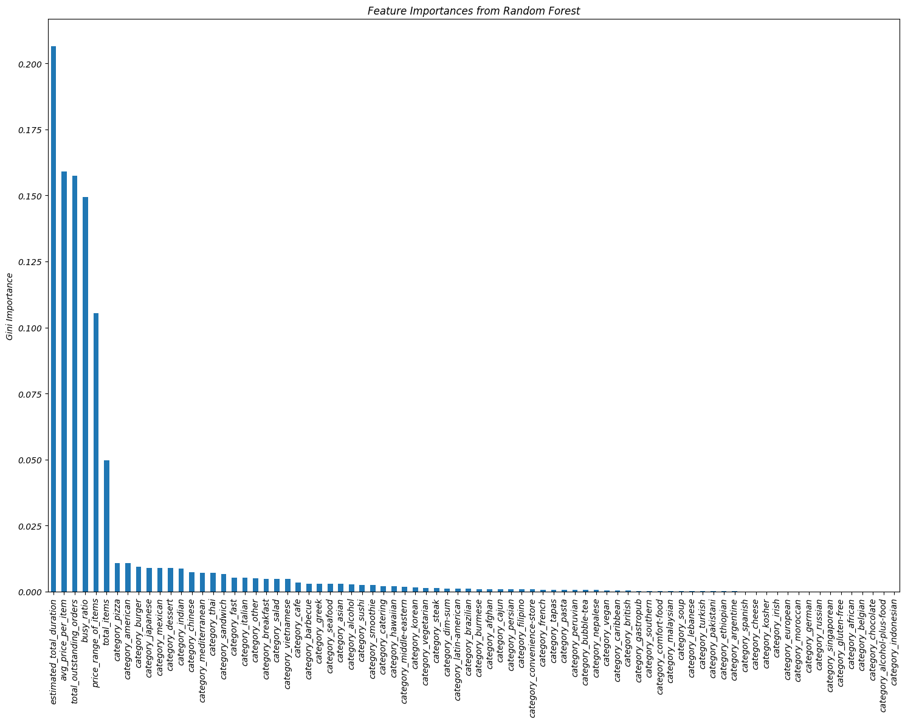
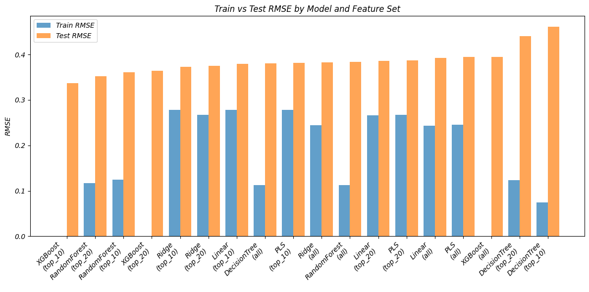

DoorDash Delivery Duration Prediction
Project Goal: Build a predictive model that estimates total delivery time based on order-level data, marketplace conditions, and store behavior, while identifying key factors affecting delivery delays.
Tech Stack: Python (pandas, numpy, seaborn, matplotlib), scikit-learn, xgboost
Why Delivery Time Prediction Matters
DoorDash promises timely food delivery. Every delayed order risks customer churn, lower ratings, and operational friction. That's why predicting how long a delivery will take—before the order is placed—is a critical business function.
This project analyzes over 170,000 historical DoorDash delivery logs to improve delivery duration estimates using machine learning. The goal was not just to build a predictive model, but to uncover what actually drives delivery delays.
Data and Method
- Source: Internal DoorDash logs from early 2015 (170,000+ rows)
- Target: Time from order placement to final delivery
- Variables: Timestamps, dasher activity, estimated durations, order item details, and market identifiers
Key Analytical Steps
1. Preprocessing
- Converted timestamp fields into delivery duration
- Cleaned and standardized missing or extreme values
2. Feature Engineering
Created new variables like:
estimated_total_duration (DoorDash's system ETA)busy_ratio (active dashers marked busy)avg_price_per_item, item_diversity_ratio, and price_range_of_items
3. Feature Selection
- Used correlation heatmaps and Variance Inflation Factor (VIF) to remove redundant predictors
- Ranked feature importance via Random Forest (Gini index)
4. Modeling
- Tested Linear, Ridge, Lasso, Partial Least Squares, Decision Tree, Random Forest, and XGBoost
- Compared model accuracy on three feature sets: Top 10, Top 20, and all predictors
- Evaluation Metric: RMSE (Root Mean Squared Error)
Visual Summary
Correlation Matrix: Detecting Multicollinearity

Feature Importance: What Drives Delivery Time?

Model Comparison: Simpler Models Performed Better

Key Findings
- Estimated ETA was the strongest predictor.
DoorDash's internal pre-estimate (estimated_total_duration) was closely aligned with actual outcomes. This validated the engineering team's domain logic and data quality.
- Restaurant preparation time matters.
Features derived from item count, diversity, and price patterns suggested that complex or high-ticket orders contributed to delays before handoff to dashers.
- Driver congestion was a major delay factor.
The busy_ratio variable—how many dashers were marked busy during the order window—strongly influenced final delivery time.
- Simplicity outperformed complexity.
Lasso regression with just the top 10 features achieved the lowest RMSE, beating deeper models like XGBoost. This suggests DoorDash can rely on lean models for fast, interpretable predictions.
Business Implications
- More accurate ETAs reduce cancellations and improve trust.
Small improvements in time prediction create a more reliable customer experience and reduce refund costs.
- Operational visibility leads to smarter dispatching.
Real-time signals like busy_ratio can be used to rebalance dasher supply before bottlenecks form.
- Feature-informed modeling keeps systems agile.
By focusing on the strongest few signals, DoorDash can build real-time models that update quickly without sacrificing accuracy.